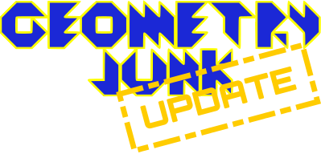

August 20th, 2015
NEW FEATURES (AND CHANGES) COMING WITH GEOMETRY JUNK UPDATE

Hi everybody! It has been a long time since our last post, so we want to share with you some informations about the next update of Geometry Junk.
First, let's talk about the premium version of the game. Geometry Junk has been available on Google Play Store for a few months as a freemium game and some of its features (i.e. Rush Mode and collectibles) have been limited to users who have bought the "Super" version. This situation is going to change, as all the features of Super Geometry Junk will become available to everyone with the next update.
Second, we will introduce new elements to customize your character. You'll be able to change the head and the colour of your hero, starting with 36 heads and 12 colours (more to come). Contextually, we will introduce a kind-of in-game currency called N&B: players will gain N&Bs after every match played, then they can recycle them to create new heads and colours for customization.
Third, we're planning to switch from Google Play Games services to a different backend solution in order to offer more functionalities. You can expect the return of achievements and leaderboards, but we're additionally working on cloud data backup. It will take time to implement a new backend, but this should help us to deliver the full set of Geometry Junk features to other mobile platforms too.
As you can see, we have great plans for Geometry Junk and we're already working to make them come true. We cannot provide a release date for now, but everything should be ready in a few months. I hope you'll continue to support us, check our site from time to time for the latest news about Geometry Junk development.